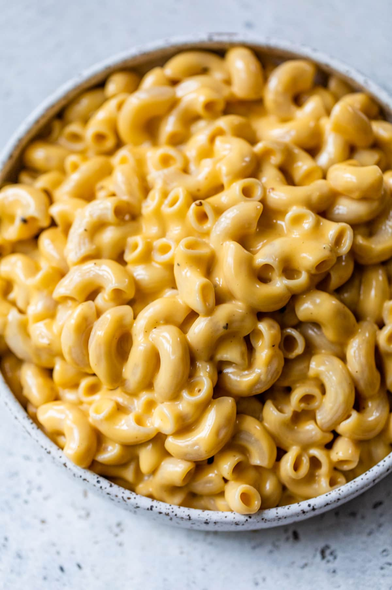

Mac N Cheese

This is the recipe for the best Mac N Cheese you could find!
It's easy, tried and especially tasty! You won't believe how easy this recipe is and how good it tastes.
The Ingredients
- Pasta - Preferably whole wheat elbow noodles, but it can also be whole wheat shells. For your choice.
- Cheese - Cheddar cheese would be the best choice for the recipe, but you can use any creamy melty cheese you enjoy like gouda or mozzarellla
- Butter - Cheese + Butter = Perfection! :)
- Greek Yogurt - Helps to make the sauce creamy without the need for heavy cream, plus it's yummy :)
- Spices - Dry or ground mustard, Cayenne pepper, salt and nutmeg as the secret ingredient to make this recipe perfect.
The Recipe Steps:
- Cook the Noodles. Stir the pasta, water, and salt together in an Instant Pot. Cook on HIGH for 4 minutes, then release the pressure.
- Drain. Pour out all but a thin layer of water.
- Season. Stir in the butter. Add the spices.
- Add the Yogurt. Don’t use fat free or it will curdle.
- Add the Cheese SLOWLY. If you add it too quickly, it will make your cheese sauce lumpy. ENJOY!